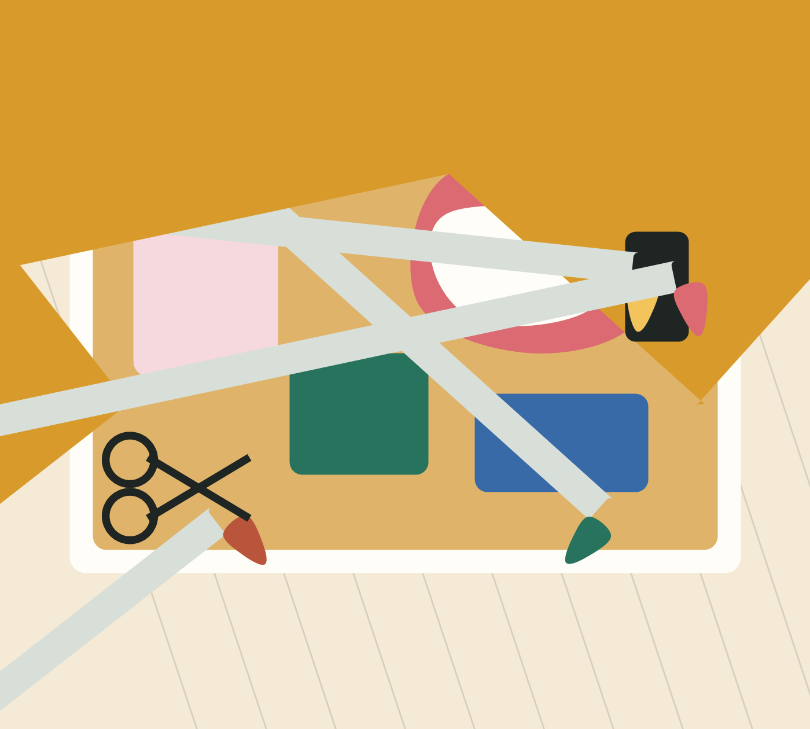
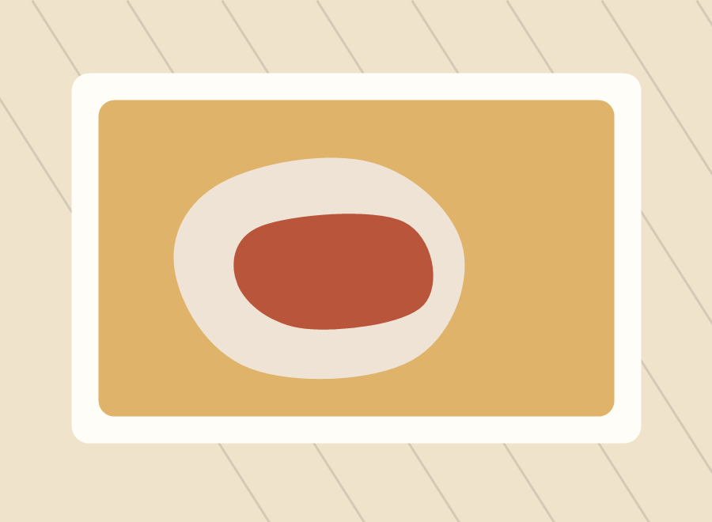
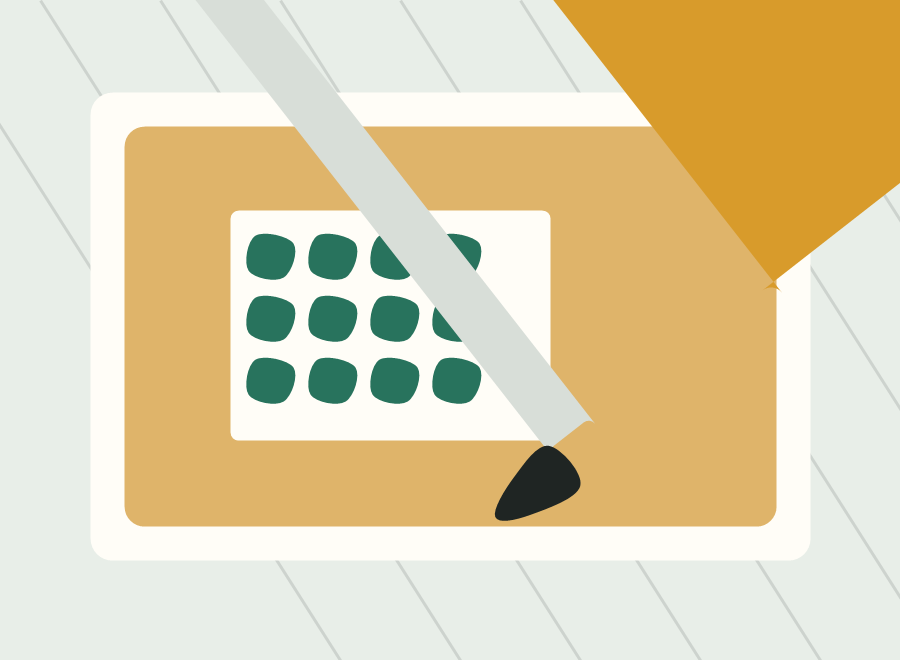
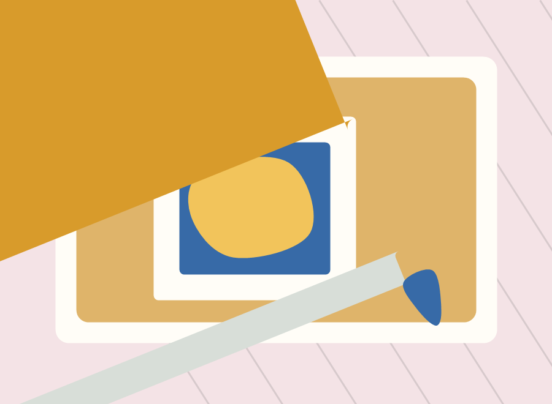
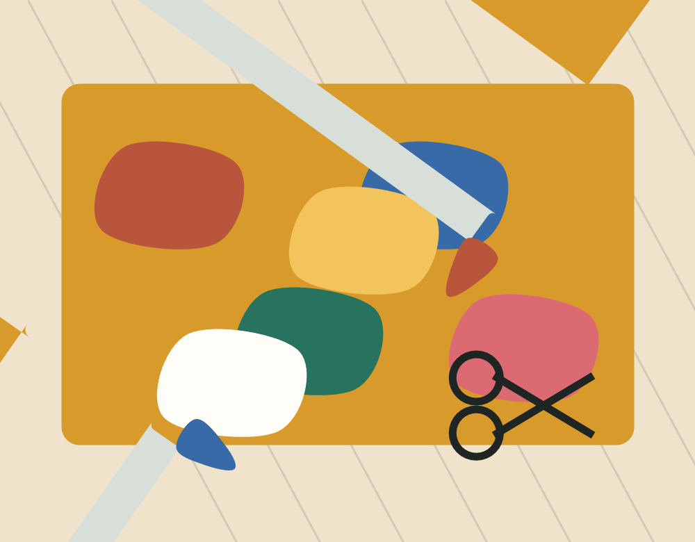

Choose your lane
Drop into open studio, join a guided workshop, or book a private table for your group.
DIY art studio / messy tables / guided workshops
Paint louder. Glue bravely. Build the thing you keep imagining. Studio Makehouse is a hands-on art studio for DIY workshops, open studio nights, and gloriously imperfect projects.

How it works
Drop into open studio, join a guided workshop, or book a private table for your group.
Paints, papers, clay tools, fabric scraps, stamps, adhesives, and finishing materials are ready to use.
Our hosts help with technique while keeping the project loose enough to feel personal.
This month

Saturday / 11 AM

Thursday / 6 PM

Sunday / 2 PM
Open studio
Reserve a table by the hour, bring your own piece, or start from our project shelf. Hosts are nearby for tool help, color choices, and the occasional pep talk.
$55 / month

Made here
Visit
Studio Makehouse is set up for solo makers, date nights, team afternoons, birthday tables, and anyone who has ever said, "I could make that."
Hours Tue-Fri 12-8 / Sat-Sun 10-6
Location 214 Workshop Lane, Arts District
Email hello@studiomakehouse.example
Plan a visit